“工欲善其事，必先利其器。”在正式开工之前，我们首先要正确地下载安装我们开发需要的软件。
- 一款稳当的压缩文件管理器
- OpenBVE主程序
- 来到官网，点击蓝色大按钮，下载并运行最新版本的OpenBVE安装程序。由于OpenBVE维护团队十分敬业，更新频繁，您可能需要定时检查更新才可以及时使用最新功能并迎接BUG的修复。
- 确保您有管理员权限，然后运行安装程序。并不提供中文。前几步的设置不需更改，可直接一路OK+Next。 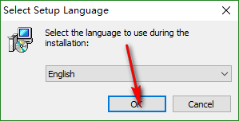
- 这一步设置存储线路文件的位置。个人不大喜欢默认的每个用户位置不同还放在AppData文件夹深处的方式，而是选择了第二项。这会把线路文件放置在[
C:\Program Files (x86)\openBVE\UserData\LegacyContent]中。桌面上也会创建一个名为openBVE Addons的快捷方式，方便您快速进入。
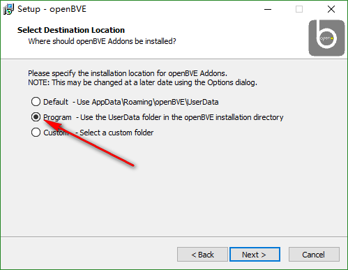 - 最后点击Install确认安装设置，安装完成。 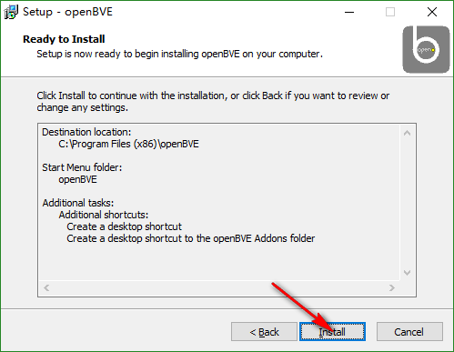
- 新式包管理器法：OpenBVE的新版本有了一个又炫酷又方便的扩展包管理器，使用该管理器可以快速方便地安装和卸载线路和列车扩展包（当然前提是那条线路的开发者使用了扩展包的形式发布它的线路或列车）。扩展包一般是一个zip文件，特点是打开后里面会有一个
Package.xml文件，这些线路或列车包可以快速方便地安装。我们要演示的这条线路是日本著名线路开发者Local Train (reren)开发的架空（即虚构）铁路西条线。这条线路质量很高，且包括很多openBVE的如动画等特色内容，很值得一玩。 - 一般手动安装法：当这条线路的开发者没有按照扩展包法打包线路时，就只能使用这个方法来安装线路了。我们要演示的这条线路是日本著名线路开发者Local Train (reren)（对，还是那位）开发的极富盛名的东京地铁东西线。
- 享受OpenBVE带给您的乐趣！ 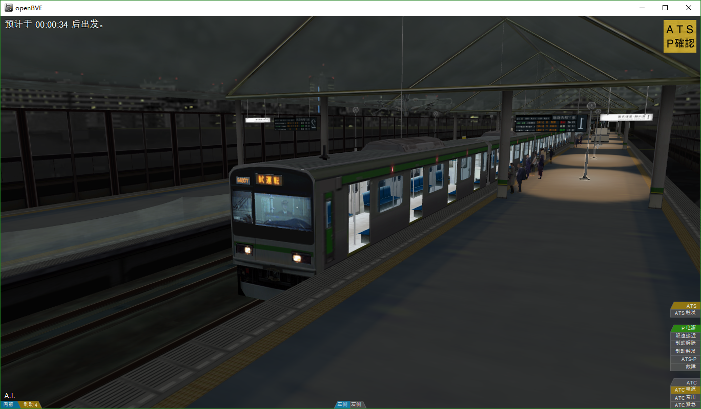 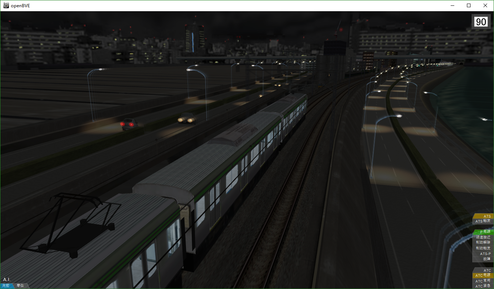
- 玩儿完了之后，我们打开OpenBVE的安装目录（在第2步设的那里），熟悉一下主程序附带的我们接下来很快就要用到的几个开发工具。 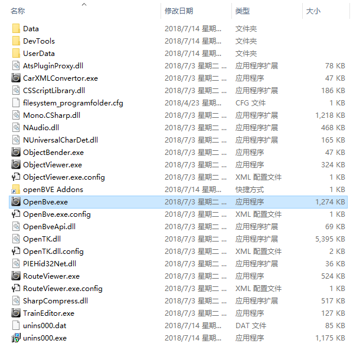
- Notepad++ 文字编辑器
- 前往官网，点击最大的绿色Download按钮，下载运行安装程序。不要下载64位版。
- 安装过程十分简单，确认您拥有管理员权限，选择中文安装，一路下一步即可。
- 完成安装之后，请从这里下载OpenBVE的语法高亮插件。这能使线路编辑更方便。
- 将插件压缩包内全部内容解压进您的安装目录中的plugins文件夹，并重启Notepad++。 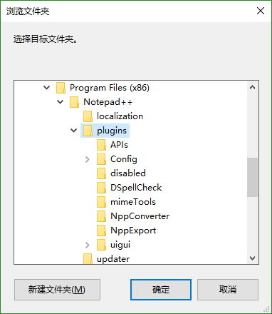
- 正确地开启语法高亮。在打开一个CSV线路文件时（后面将会讲述），选中[语言]->[OpenBVE]，您就能享受到丰富多彩而又清晰的编写体验。 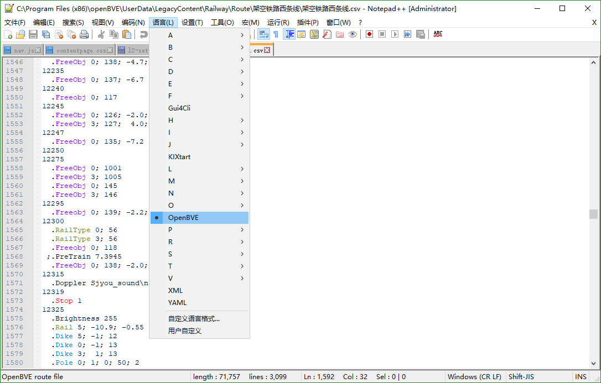
- 正确地选择字符编码。错误的设置可能导致实际使用时乱码。在保存前检查右下角的编码显示和[编码]菜单中的指示（如图），如果没有显示[UTF-8](例如显示GB2312等其它字符编码)，则点击[编码]->[转为 UTF-8 编码]来将文件的字符编码转换为UTF-8，然后再保存。这是一个国际通用的编码标准，可以避免不同语言系统环境下字体乱码的问题。 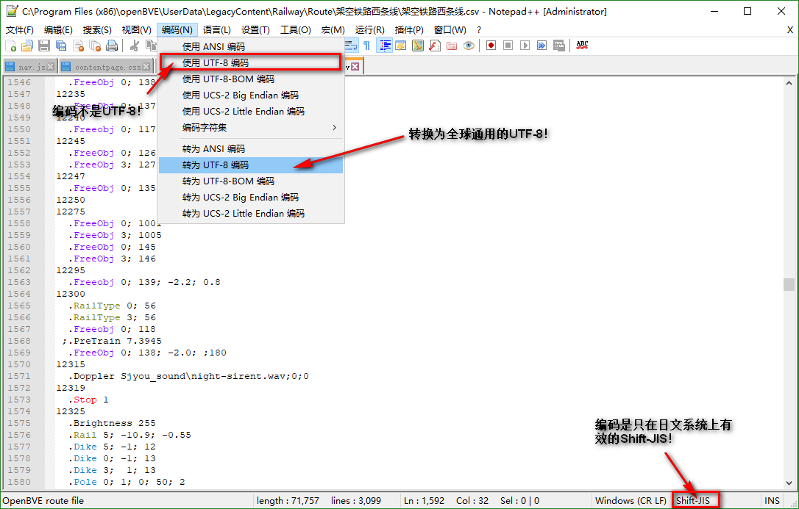
- 教程配套线路资源
- 配置Windows资源管理器
强烈建议您使用一款可以支持Unicode字符编码的压缩软件进行打包，并使用支持Unicode字符编码的压缩格式（比如说rar与zip格式(大部分)就不支持Unicode，WinRAR软件也是），以避免字符编码问题造成的不必要的麻烦。这是一位日本开发者使用WinRAR在日文系统打包线路，然后放到中文系统中打开造成的结果。个人来说较为推荐7-Zip（由于开源），BandiZip也不错。要么就使用7Z等默认支持Unicode字符编码的压缩格式打包线路，要么就不要使用任何带中文字符的文件和文件夹名。对于使用zip的Hmmsim开发者们就只能选用后者了。
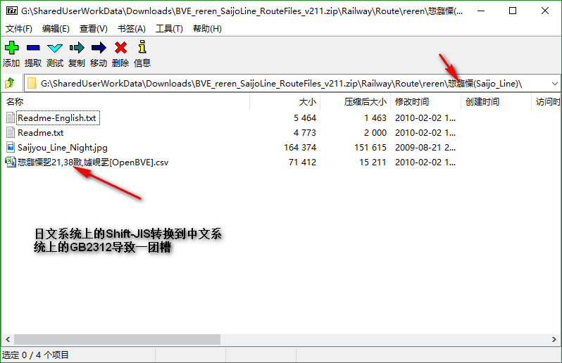不论是OpenBVE还是Hmmsim开发者，在开发线路时都建议下载OpenBVE主程序。
小知识：OpenBVE和Hmmsim都是BVE的改版，其中OpenBVE是开源的功能扩充版，Hmmsim是手机的功能阉割版(笑)。
OpenBVE比起Hmmsim有许多有趣而有用的特色功能。事实上，我们推荐线路开发者们同时发布适用于OpenBVE和Hmmsim的两版线路。对于只面向移动端的开发者们，OpenBVE也可以方便我们对线路进行调试，而且还附带提供几个方便的线路制作工具。
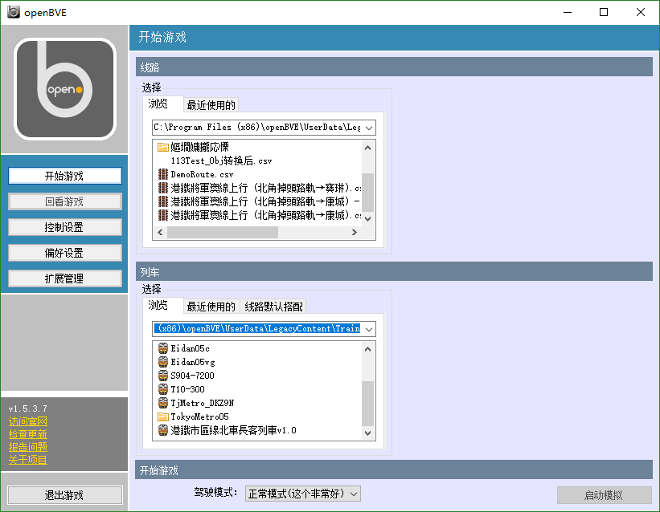
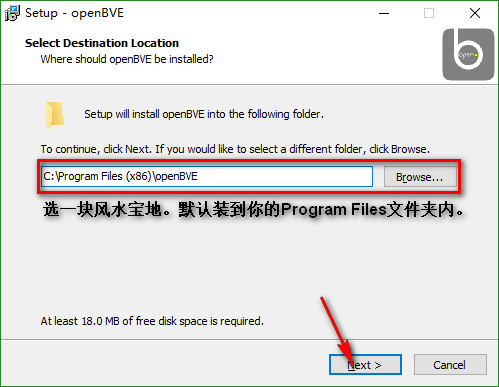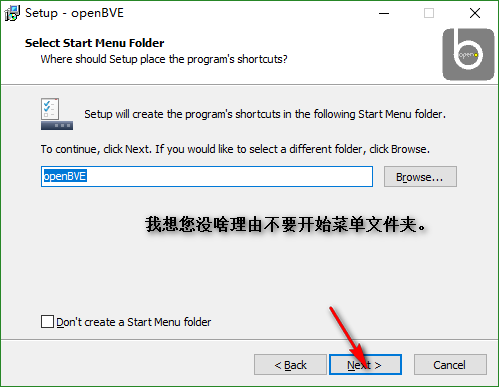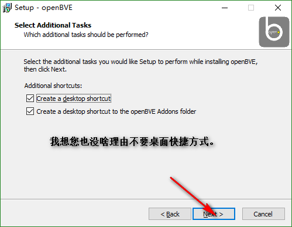
刚刚安装的openBVE是只有主体，不带有任何线路的。为了庆祝一下玩个痛快，也为了向大家讲解一下如何安装线路，我们将安装一条线路，为大家讲解一下安装线路的方法。
下载完成之后，我们开始一个一个地安装这些扩展包。方法是进入程序，点击“扩展管理”——“安装扩展包”——“选择扩展包”——“继续”。
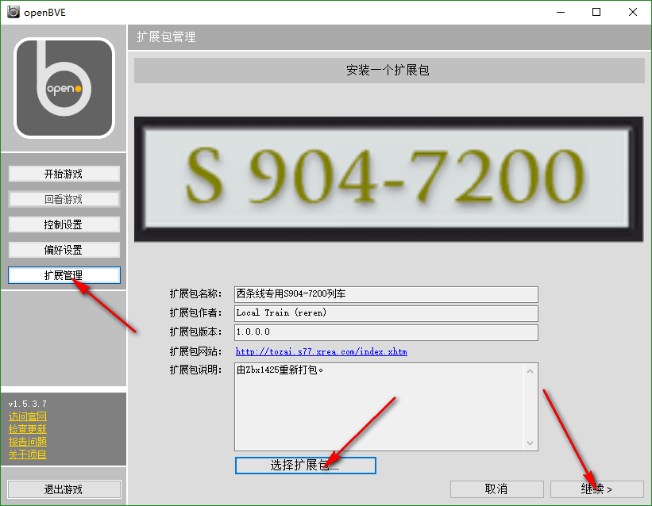……先别急！如果你安装线路包，你就会看到这个错误信息。因为这两个包是有依赖关系的——线路只有有了列车才可以游玩，所以必须在安装线路包前先安装列车包。
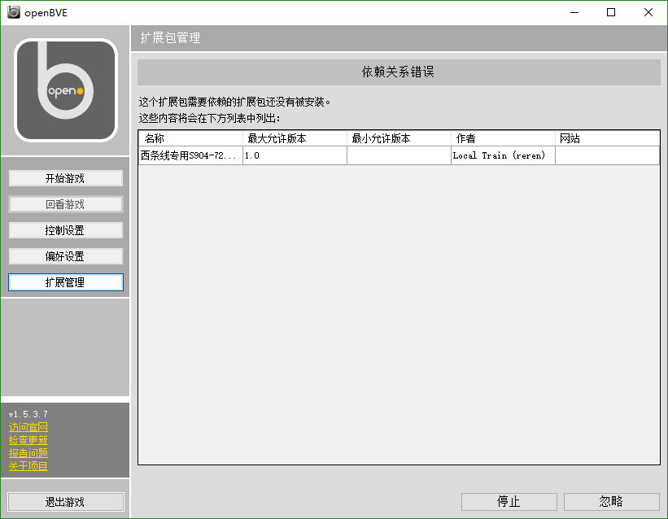安装完成之后，就可以在包管理器中看到线路包地各项信息了。安装和卸载都很方便！这时我们就可以从左列中选择“开始游戏”，选好线路（匹配列车会自动选择），开始游玩了！
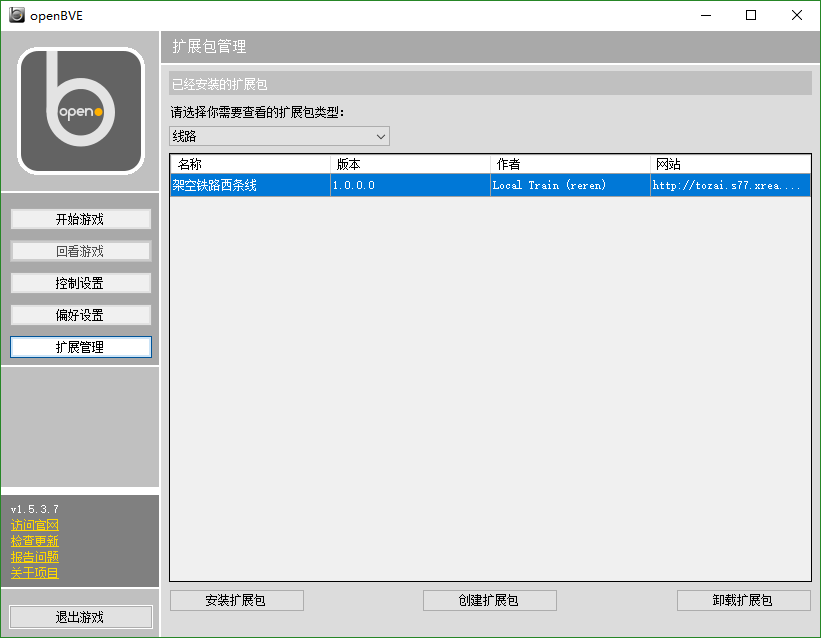使用您的解压缩软件（我个人比较推荐使用7-Zip）打开线路包，比较正常的开发者的包以及Hmmsim线路包里都会有一个Railway文件夹，如果不是的话，请您寻找开发者的安装方法介绍，或咨询开发者。
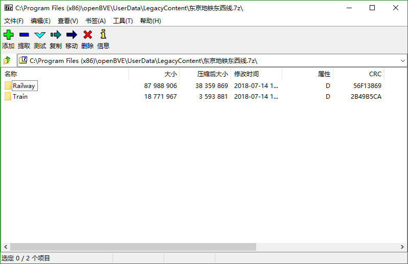找到您的openBVE
Addons文件夹中的LegacyContent文件夹，并将您压缩包里的Railway和Train（如果有）两个文件夹解压进这个目录中。
装完了程序，下好了线路，接下来我们要做这些事！
如果您不清楚该如何控制openBVE中的列车，请参见列车基础控制教程。
所有的道路车辆都会动，开关门、道口遮断器、公路信号灯甚至车站电梯都有动画，这条线路质量真的好评！
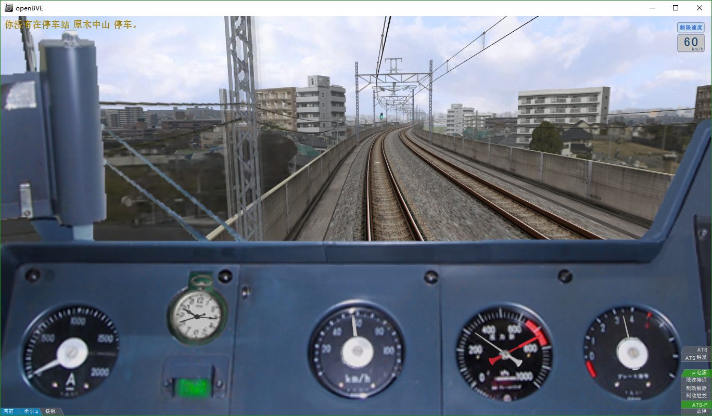| OpenBve.exe | 游戏主程序 | 测试游玩线路实际效果的地方。 |
| ObjectViewer.exe | 模型查看器 | 可以查看各种支持格式模型的实际效果。 |
| RouteViewer.exe | 线路查看器 | 可以快速预览线路。有快速移动等方便功能，加载迅速。 |
| ObjectBender.exe | 模型掰♂弯器 | 我认为这个名字十分生动形象。 |
| TrainEditor.exe | 列车编辑器 | 快速方便地编辑列车各种参数。 |
| CarXMLConvertor.exe | 列车转换器 | 这个工具对我们现阶段的这些开发者不重要。 |
我们肯定很快就会再次见到它们的。
这是一个不错的开源免费的文本编辑器。当然您可以选择使用Sublime Text、记事本或Excel等软件编写，但我认为这款软件使用方便，而且重要的是可以提供方便的语法高亮，并处理字符编码问题。需要注意因为某魔幻现实主义国家的咱都懂的原因，官网打开速度极为缓慢。但下载速度还是可以接受的，坐稳放松即可，急性子可以选择VPN。或者您也可以选择从百度搜索然后在列表里寻找一个尽量新的版本，但可能不是最新的。由于插件不兼容，请勿下载64位版。
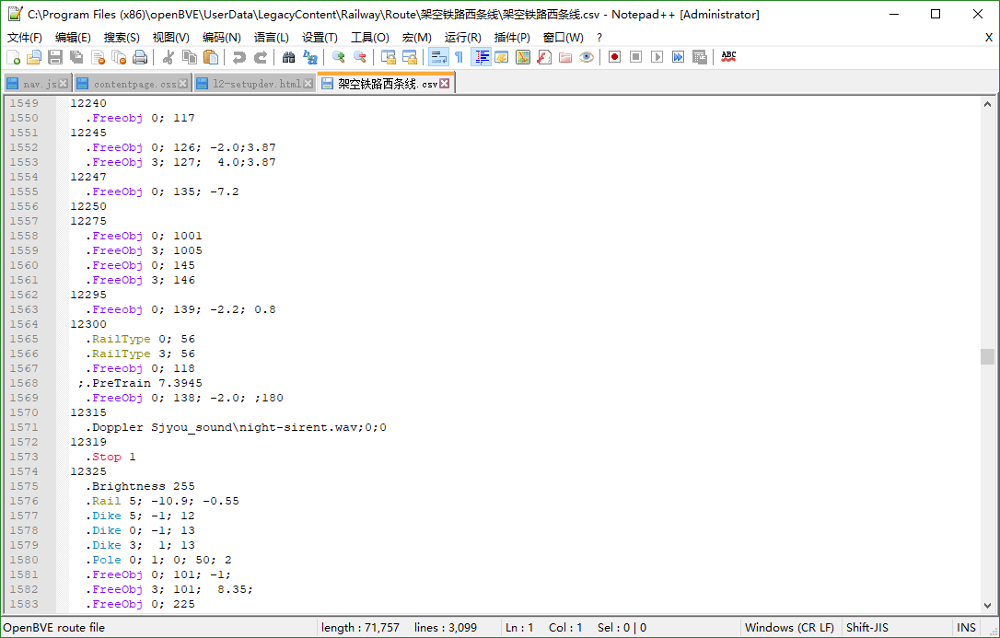安装现在已经完成。下面介绍一下在使用过程中的注意事项。
这里给出Windows操作系统的配置方法。
Windows 8 及以上：
从顶部选择“查看”选项卡，并勾选“文件扩展名”和“隐藏的项目”。
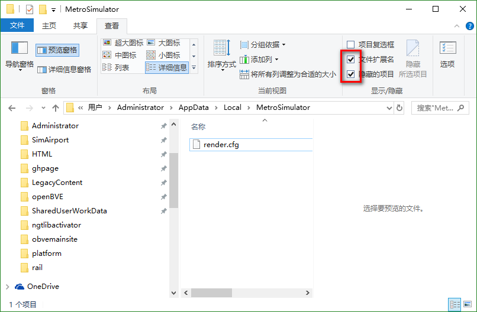Windows Vista及Win7：
从工具栏选择“组织”，在列表中选择“文件夹与搜索选项”，选择“查看”选项卡，在列表中点选“显示隐藏的文件、文件夹和驱动器”，取消勾选“隐藏已知文件类型的扩展名”，最后点击“确认”。
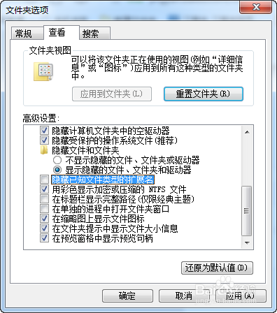Windows XP：
从菜单栏选择“工具”，在列表中选择“文件夹选项”，选择“查看”选项卡，在列表中点选“显示所有文件和文件夹”，取消勾选“隐藏已知文件类型的扩展名”，最后点击“确认”。此外，XP系统在现在已经过于老旧，建议您及时升级。
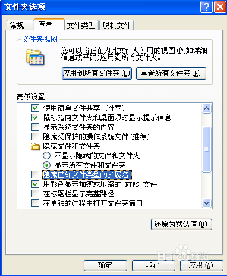好的！在将我们开发线路所需要的一切工具都准备完备后，我们就可以正式开始线路开发的学习了。请从上方线路图中选择下一讲。